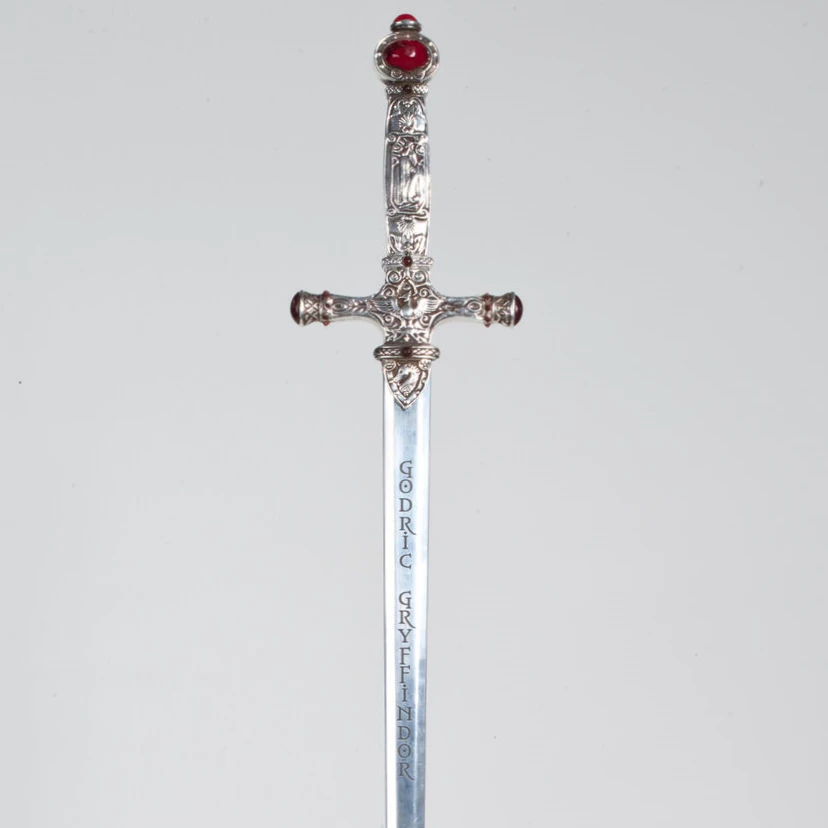
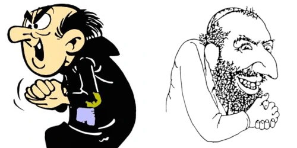

Wholly fucking shit dude. I just found out. The Harry Potter series is anti-semitic.
Voldermort started a holocaust with the goal of creating a master race of pure blood wizards. But as it turns out, Voldemort himself is not a pure blood! Here is the video below where Voldemort said "My real name is Tom Marvolo Riddle. But I changed my name to Voldemort to hide the fact that my blood is not pure." Voldermort's family descended from serpents. The very same serpents who tricked Eve into eating the forbidden fruit. That's why Voldemort can talk to snakes in a language called Parseltongue. Voldemort is Adolf Hitler. According to History.com 1, Adolf Hitler had jewish DNA. Check out Voldemort's wikipedia 1, it says Voldemort is a "half-blood, muggle father, witch mother."
https://youtu.be/uwieFbajGxw?t=140
The only way to kill Voldemort is through The Sword of Gryffindor, a sword created by GODric. Notice the shape of the sword is a cross.

The Smurfs is anti-semitic.
According to wikipedia, Gargamel is "the sworn enemy of the Smurfs, his main goals are to destroy them, eat them, or transform them into gold." The Smurfs are a homogenous blue race. Gargamel's cat is called Azrael.

The Squid Game is anti-semitic.
According to the show's creator, Squid Game is an allegory for the perils of capitalism. Under capitalism, life itself becomes a deadly game. In the Squid Game, VIPs control the world while wearing golden masks. The VIP own butlers who look and behave like cats. It is widely known, the VIPs are based on The Rothschild Surrealist Ball, a real life jewish family who wear golden masks and own "butlers pretending to be cats 1."
The VIPs with cat butlers.
The VIPs with golden masks. One has deer antlers.

The Rothschilds with golden masks.

The Rothchilds with deer antlers.

This next one is so anti-semitic it sends shivers down my spine.
The Twilight Zone: Season 2, Episode 5
Summary: David Ellington is walking alone during a thunderstorm without any umbrella. David knocks on the nearest castle and says "Can I please stay in your castle until the storm stops?" Inside the castle, during the middle of the night, David hears strange noises, follows it, and discovers there is a man living inside a prison cell. David said "Why are you locked in here?" The prisoner replied "The owner of this castle is the leader of an evil cult. Everyone in this cult, they all think I'm Satan. Truth is, I'm just a nice sweet old man, I would never hurt a fly. Will you please unlock my prison cell?" The next day, David Ellington told the castle owner "Why do you have a man trapped in your basement? I oughta report you to the police." The castle owner replied "Listen to me. The man you saw is not a man at all. It is the Devil himself. Promise me, you won't release him?" David replied "I promise. I believe you." David lied. David sneaks in and releases the prisoner. The prisoner walks out, smiles menacingly, horns comes out of his head, and he vanishes into thin air. The next day, world war 2 started. It turns out he was literally Satan all along. That is satan's talent. He fools everyone.
This is the quote that always gives me the heebee jeebies.
The devil has the power to assume a pleasing shape. I had seen the Devil before, in all parts of the world, in all forms and guises. Wherever there was sin, strife, corruption, persecution; there He was... Sometimes He was merely a spectator, or an unassuming face in the crowd, but ALWAYS He was there.
The Simpsons is anti-semitic.
Mr. Burns is the villain of Springfield, and he looks like Jacob Rothschild. There is a running joke in Springfield that nobody knows what is Mr. Burn's real age. Mr. Burns is estimated to be between 81 and 1,000+ years old. The only reason Mr. Burns is alive is because he's doing satanic rituals to stay alive, like Voldemort drinks the blood of unicorns.